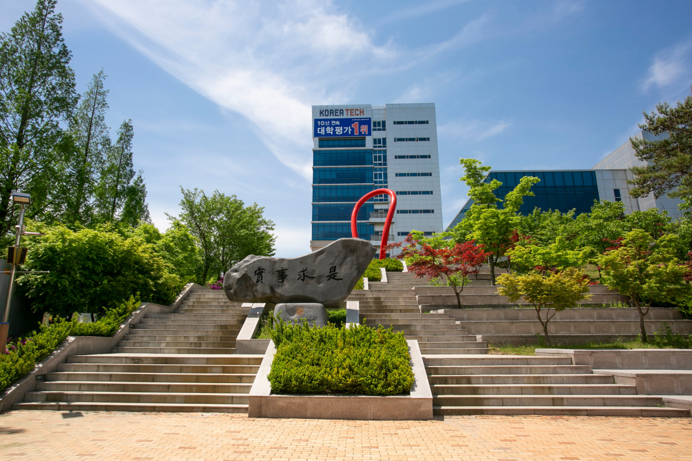

고용노동부(당시 노동부)가 전액 정부 출연하여 1992년 개교한 4년제 사립대학교이며, 고용노동부 산하 기타공공기관으로 지정되어 있다. 실천공학과 HRD(인적자원개발) 중심의 대학이며, 한국산업인력공단 이사장이 한국기술교육대학교 이사장을 겸하고 있다. 약칭은 한기대라고 부른다. 이름에 '교육대학교'가 들어있지만 흔히 알고있는 교육대학은 아니다. 교대를 나오면 초등교사가 될 수 있지만, 한기대를 나오면 직업능력훈련기관의 직업훈련교사가 될 수 있다. 말 그대로 기술교육대학인 것이다. 영문 명칭은 KOREA TECH 또는 KOREA University of Technology and Education이며, 브랜드명으로 설립 초창기에는 KITE를 사용했으나 KUT로 바뀌었고, 2011년부터 KOREA TECH로 바뀌었다. 교육 이념은 실사구시(實事求是). 사전적 의미로는 '사실에 입각하여 진리를 탐구하려는 객관적인 태도'이며, 실습 위주의 교육이라 할 수 있겠다. 교육이념에 맞게 실사구시를 강조해서 각종 건물 이름 등이 실학과 관련이 많다.